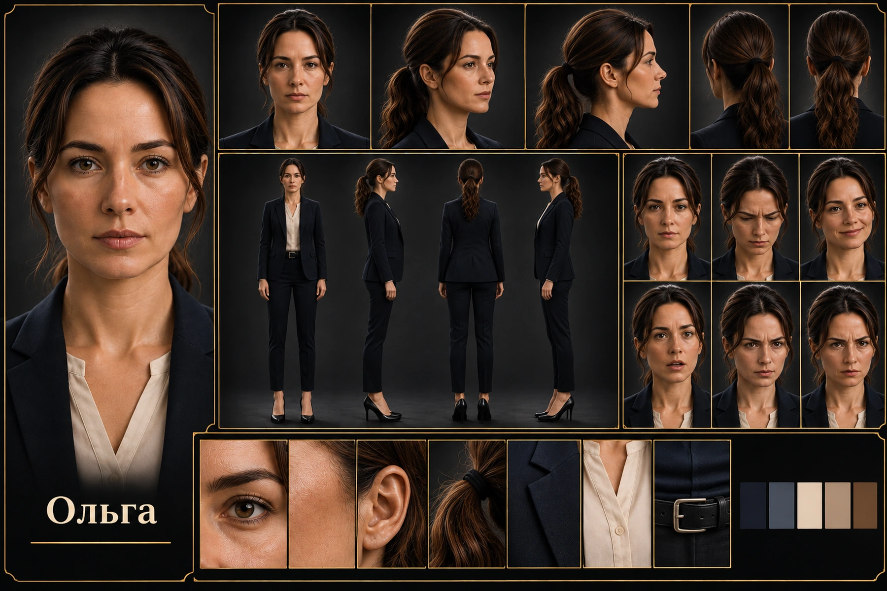

ОСНОВНА ІНФОРМАЦІЯ
Представниця Ордена
Ольга — представниця Ордена. У спілкуванні вона стримана, вимоглива й зосереджена. Її манера триматися впевнена та дипломатична.
Ім’я: Ольга
Статус: представниця Ордена
Вік: близько 45 років
Зовнішність: темні очі, темне волосся, зібране ззаду
Статура: струнка
Походження: не встановлено
Зріст: не встановлено
Особливі здібності: не підтверджені
Особисті речі: не встановлені
ЗОВНІШНІСТЬ І МАНЕРА
Стриманість і впевненість
На затвердженій візуальній картці Ольга зображена в темному діловому костюмі зі світлою блузкою. Її волосся зібране, образ доповнюють стримані прикраси та годинник.
У характері підкреслені зосередженість, вимогливість, упевненість і дипломатичність. Інші біографічні подробиці та здібності наразі не підтверджені.